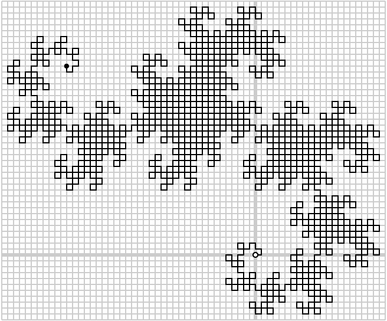

Problem A - Fractal
Define r(s) to be the complement of the reverse of the binary string s. i.e. Reverse s and then convert all 1's to 0's and all 0's to 1's. Further define a sequence of binary string as follow: s0 = 1 and sn = sn-11r(sn-1). i.e.
s0 = 1
s1 = 110
s2 = 1101100
s3 = 110110011100100
...
We then program a robot to move at a steady speed of 1 unit per second and make a right-angle turn according to the characters of s10 after every unit of movement. At the kth turn, the robot turns to left if the kth character of s10 is a 1, and to right otherwise. The figure below shows the whole path of the robot.

The robot is placed at the origin (the small circle) and face east originally. It ends up at the coordinates (-32,32) (the small spot) after 2048 seconds. The path of the robot is known as a dragon curve, a pretty well-known pattern of fractal.
If the robot is now programmed with input string s30 (with identical initial conditions as above), it will keep moving and then stop after 231 seconds. We want to know the location of the robot at any given time.
Input
Input consists of multiple problem instances. Each instance consists of a single non-negative integer n, where n ≤ 109. The input data is terminated by a negative integer. There will be less than 5000 test cases.
Output
For each input integer n, print out the location of the robot right after n second since the robot starts its journey with input string s30. The location should be printed with the format “(x,y)” in a single line.
Sample input
1
2
3
2048
1000000000
-1
Sample output
(1,0)
(1,1)
(0,1)
(-32,32)
(9648,-31504)
Problem setter: Cho
Source: Tsinghua-HKUST Programming Contest 2007